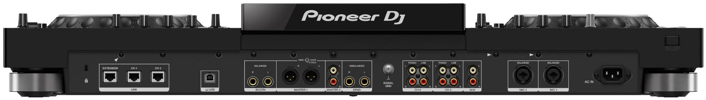

Ищите профессиональный сетап для мероприятий, бара, небольшого клуба или своей собственной студии? XDJ-XZ может стать Вашим идеальным выбором. Гибкая медийная поддержка и интерфейс, позаимствованы непосредственно у нашего сетапа клубного стандарта, играя на нашей новой DJ системе все-в-одном у Вас будет полное ощущение, что Вы работаете на CDJ-2000NXS2 и DJM-900NXS2. Это надежный сетап с легкодоступными дополнительными функциями и высококачественным звуком.
Выбирайте, хочется ли Вам играть треки с USB носителя, обработанные на rekordbox через 1 и 2 каналы на XDJ-XZ или подключите свой ноутбук и используйте rekordbox dj или даже режим Link Export. Два дополнительных канала позволит Вам миксовать аудио с внешних источников, таких как вертушки, а Pro DJ Link позволяет искать треки с CDJ (специализированных цифровых музыкальных проигрывателей для диджеинга) на 7-дюймовом сенсорном экране XDJ-XZ и синхронизировать их со своим миксом. Скоро Вы сможете даже выступать, используя Serato DJ Pro, после того, как в начале 2020 года появится обновление прошивки программного обеспечения. Хотите играть вместе с партнером? С тремя USB портами (тип A x 2, тип B x 1) диджеи могут с легкостью менять друг друга.
Задняя панель XDJ-XZ
